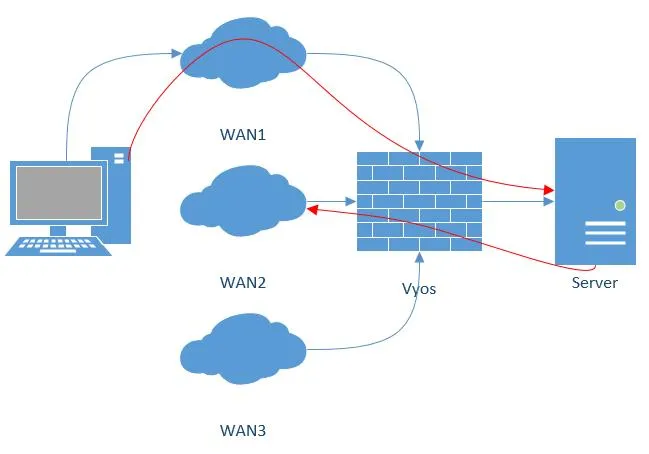

WAN load balancing
Todo
Convert raw command blocks in this file to cfgcmd/opcmd directives for command coverage tracking.
The load balancer distributes outbound traffic across two or more interfaces. If a path fails, the load balancer balances traffic across the remaining healthy paths. When a path recovers, it is automatically added back to the routing table. The load balancer adds routes for each path and distributes traffic based on interface health and weight.
In a minimal configuration, the following must be provided:
An interface with a
nexthop.One rule with a LAN (inbound-interface) and the WAN (interface).
The following examples uses two DHCP WAN interfaces and one LAN (eth2):
set load-balancing wan interface-health eth0 nexthop 'dhcp'
set load-balancing wan interface-health eth1 nexthop 'dhcp'
set load-balancing wan rule 1 inbound-interface 'eth2'
set load-balancing wan rule 1 interface eth0
set load-balancing wan rule 1 interface eth1
Note
Do not use WAN load balancing with dynamic routing protocols. This feature creates customized routing tables and firewall rules that are incompatible with routing protocols.
Load balancing rules
You define interfaces, their weight, and the traffic type to balance in numbered rule sets. The load balancer executes rules in numerical order against outgoing packets. When a packet matches a rule, it is sent through the specified interface. Packets that do not match any rule use the system routing table. You cannot change rule numbers.
Create a load balancing rule, it can be a number between 1 and 9999:
vyos@vyos# set load-balancing wan rule 1
Possible completions:
description Description for this rule
> destination Destination
exclude Exclude packets matching this rule from wan load balance
failover Enable failover for packets matching this rule from wan load balance
inbound-interface Inbound interface name (e.g., "eth0") [REQUIRED]
+> interface Interface name [REQUIRED]
> limit Enable packet limit for this rule
per-packet-balancing Option to match traffic per-packet instead of the default, per-flow
protocol Protocol to match
> source Source information
Interface weight
By default, the load balancer distributes outbound
traffic randomly across available interfaces. You can assign weights to
interfaces to influence the distribution. If eth0 has more bandwidth
than eth1, you can assign a higher weight to eth0 to send more
traffic through it:
set load-balancing wan rule 1 interface eth0 weight 2
set load-balancing wan rule 1 interface eth1 weight 1
In this example,``eth0`` receives 66% of traffic, and eth1 receives
33% of traffic.
Rate limit
Set a packet rate limit for a rule to apply it to traffic above or below a specified threshold. To configure rate limiting, use:
set load-balancing wan rule <rule> limit <parameter>
burst: Number of packets allowed to overshoot the limit withinperiod. Default 5.period: Time window for rate calculation. Possible values:second(one second),minute(one minute),hour(one hour). Default issecond.rate: Number of packets. Default:5.threshold:beloworabovethe specified rate limit.
Flow and packet-based balancing
The load balancer balances outgoing traffic by flow. A connection tracking table tracks flows by source address, destination address, and port. Each flow is assigned to an interface based on the balancing rules, and subsequent packets use the same interface. This ensures packets arrive in order when links have different speeds.
Packet-based balancing can improve balance across interfaces when packet order is not critical. Enable per-packet balancing for a rule with:
set load-balancing wan rule <rule> per-packet-balancing
Exclude traffic
To exclude traffic from load balancing, traffic matching an exclude rule bypasses load balancing and uses the system routing table instead:
set load-balancing wan rule <rule> exclude
Health checks
The load balancer periodically checks the health of interfaces and paths by sending ICMP packets (ping) to remote destinations, performing TTL tests, or executing a user-defined script. If an interface fails the health check, the load balancer removes it from its interface pool. To enable health checking for an interface:
vyos@vyos# set load-balancing wan interface-health <interface>
Possible completions:
failure-count Failure count
nexthop Outbound interface nexthop address. Can be 'dhcp or ip address' [REQUIRED]
success-count Success count
+> test Rule number
Specify the nexthop on the path to the destination. You can set
ipv4-address to dhcp.
set load-balancing wan interface-health <interface> nexthop <ipv4-address>
Set the number of health check failures before the load balancer marks an interface as unavailable (range 1-10, default 1). Or set the number of successful health checks before adding an interface back to the pool (range 1-10, default 1).
set load-balancing wan interface-health <interface> failure-count <number>
set load-balancing wan interface-health <interface> success-count <number>
Configure each health check in its own test. Tests are numbered and processed in numeric order. You can define multiple tests for multi-target health checking:
vyos@vyos# set load-balancing wan interface-health eth1 test 0
Possible completions:
resp-time Ping response time (seconds)
target Health target address
test-script Path to user defined script
ttl-limit Ttl limit (hop count)
type WLB test type
resp-time: The maximum response time for ping in seconds. Range 1-30, default5.target: The target to receive ICMP packets. The address can be an IPv4 address or hostname.test-script: A user-defined script must return 0 to succeed and non-zero to fail. Scripts reside in/config/scripts. For other locations, provide the full path. When the script runs, VyOS setsWLB_INTERFACE_NAMEto the interface under test. The same value is available asWLB_SCRIPT_IFACEfor backward compatibility.ttl-limit: For the UDP TTL limit test, specify the hop count limit. The limit must be shorter than the path length. The test succeeds when an ICMP time-expired message is returned. Default1.type: Specify the test type:ping,ttl, or a user-defined script.
Source NAT rules
By default, interfaces in a load balancing pool replace the source IP of each outgoing packet with their own address to ensure replies arrive on the same interface. The load balancer handles this through automatically generated Source NAT (SNAT) rules applied only to balanced traffic. To disable the automatic generation of SNAT rules when this behavior is not desired, use:
set load-balancing wan disable-source-nat
Sticky connections
Inbound connections to a WAN interface can be improperly handled when replies are sent back to the client.


When responding to an incoming packet, you may want to ensure the response leaves from the same interface as the incoming packet. Enable sticky connections in the load balancer to do this:
set load-balancing wan sticky-connections inbound
Failover
In failover mode, one interface is primary and other interfaces are secondary or spare. The load balancer uses only the primary interface. If it fails, a secondary interface from the available pool takes over. The load balancer selects the primary interface based on its weight and health. Other interfaces become secondary. Secondary interfaces are chosen based on their weight and health. You can also select interface roles based on rule order by including interfaces in balancing rules and ordering those rules accordingly. To enable failover mode, create a failover rule:
set load-balancing wan rule <number> failover
Existing sessions do not automatically fail over to a new path. Flush the session table on each connection state change to enable failover:
set load-balancing wan flush-connections
Warning
Flushing the session table causes other connections to revert from flow-based to packet-based balancing until each flow is reestablished.
Script execution
Run a script when an interface state changes. Scripts run from the
/config/scripts directory. To use a script in another location,
specify the full path:
set load-balancing wan hook script-name
Two environment variables are available:
WLB_INTERFACE_NAME=[interfacename]: Interface to be monitoredWLB_INTERFACE_STATE=[ACTIVE|FAILED]: Interface state
Warning
Blocking call with no timeout: VyOS becomes unresponsive if the script does not return.
Handling and monitoring
The following command shows WAN load balancer information including test types and targets. The character at the start of each line indicates the test state:
+successful.-failed.A blank indicates that no test has been carried out.
vyos@vyos:~$ show wan-load-balance
Interface: eth0
Status: failed
Last Status Change: Tue Jun 11 20:12:19 2019
-Test: ping Target:
Last Interface Success: 55s
Last Interface Failure: 0s
# Interface Failure(s): 5
Interface: eth1
Status: active
Last Status Change: Tue Jun 11 20:06:42 2019
+Test: ping Target:
Last Interface Success: 0s
Last Interface Failure: 6m26s
# Interface Failure(s): 0
Show connection data of load balanced traffic:
vyos@vyos:~$ show wan-load-balance connection
conntrack v1.4.2 (conntrack-tools): 3 flow entries have been shown.
Type State Src Dst Packets Bytes
tcp TIME_WAIT 10.1.1.13:38040 203.0.113.2:80 203.0.113.2 192.168.188.71
udp 10.1.1.13:41891 198.51.100.3:53 198.51.100.3 192.168.188.71
udp 10.1.1.13:55437 198.51.100.3:53 198.51.100.3 192.168.188.71
Restart
restart wan-load-balance